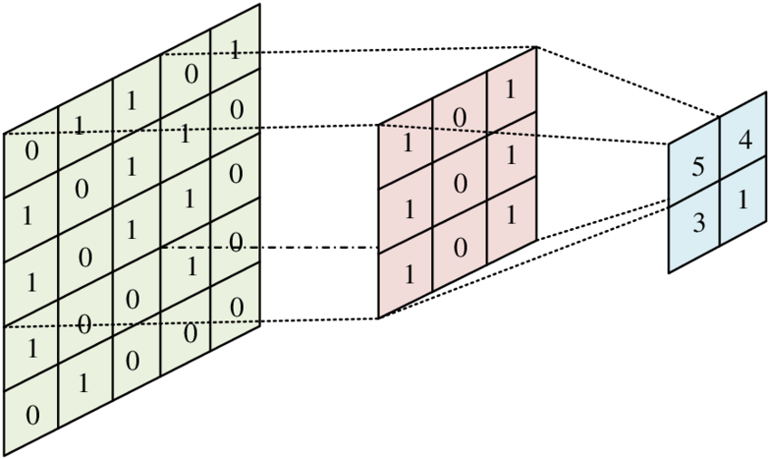

🔁 Convolution
Convolution is a mathematical operation used to determine the output of an LTI (Linear Time-Invariant) system when the input and impulse response are known. It's a cornerstone of system analysis.
🧮 Definition
The convolution of two signals x(t) and h(t) is defined as:
y(t) = x(t) * h(t) = ∫ x(τ) h(t - τ) dτ
📊 Graphical Intuition

Visual: Flip, shift, multiply, and integrate. That’s convolution.
📘 Example
Given: x(t) = u(t), h(t) = e−tu(t)
Then: y(t) = ∫₀ᵗ e−(t−τ) dτ = 1 − e−t
🧠 Tips
- Use graphical method for piecewise functions
- Break signals into basic segments
- Convolution in time ↔ multiplication in frequency
📝 Quiz
Q1: Convolve x(t) = δ(t), h(t) = e−tu(t)
Answer: y(t) = h(t)
Q2: What operation does convolution in time domain correspond to in frequency domain?
Answer: Multiplication